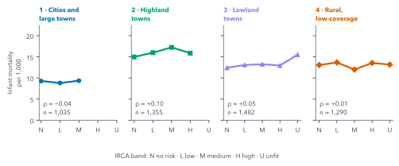

13 Correlation Is Not Causation
Quarto, reproducible publishing, coding assistants, Markdown, Python, EPUB, data analysis, k-means clustering
The analysis was built to ask whether places with worse water have worse outcomes, and the temptation, once there is a chart, is to read the answer as an effect: worse water causes more infant deaths. The data cannot support that sentence, and this chapter shows why, with the analysis’s own numbers.
One more comparison, the association between water safety and infant mortality within each kind of place, comes out weak in every kind, and in one as large as across all of them. But neither a strong association nor a weak one could settle the causal question here, and the reasons decide how the results must be written. That last part is not a formality: the sentence a reader quotes is the one you publish.
13.1 Worse water, more infant deaths?
Across all municipality-years with both values in 2017–2019 and 2021–2023, the rank correlation between utility-supplied IRCA and infant mortality is +0.10 (n = 4,016). Spearman’s \(\rho\) (rho) measures whether two variables rise and fall together in rank order, from −1 (perfectly opposite) through 0 (no monotonic relation) to +1 (perfectly together), and it is not thrown by extreme values, which matters with small municipalities’ noisy rates.
A small positive association across all places could come from water, or from everything that differs between places with safe and unsafe water. The clusters offer a partial control: within a cluster, places are more alike in poverty, rurality, coverage and altitude than across the country, though far from equal (the silhouette in Section 11.2 was 0.19). So the check repeats the comparison inside each cluster (Figure 13.1).

Within the clusters, \(\rho\) runs from −0.04 in cluster 1 to +0.10 in cluster 2, where it is as large as across all places. Two things make these figures hard to set beside the pooled one. The clusters were formed partly on IRCA, so inside clusters 1 and 2 it varies less: standard deviations of 8.5 and 11.9 against 20.1 across all places, and a narrower range weakens a rank correlation by construction. (In clusters 3 and 4 it varies more, 22.9 and 31.1, and \(\rho\) is weaker there too.) And the units differ, because the unit follows the outcome. Infant mortality is measured for a whole municipality, so each municipality-year counts once, with the mean IRCA of its zones: all of them for the pooled figure, only those in the cluster for a cluster’s.
That mean is unweighted, and it covers only the zones with a score: in 54% of the pooled municipality-years only one zone has one. So the IRCA beside a rate is one zone’s score or the plain mean of two, not what the average resident drinks.
It would be easy to read this as “water does not matter”. That reading is as unsupported as the first one.
13.2 What else could explain it
Figure 13.2 draws the paths between water and infant mortality that the data cannot separate.

Poverty and rurality are likely confounders: poorer, more rural places tend to have less safe water and, for other reasons, more infant deaths. They can produce an association between water and mortality with no effect of water at all. Health-service access, worse in poor and remote places, lies on another path to infant deaths. Reporting quality works the other way: places with weak birth and death registration record fewer infant deaths than occur, and if those are also the places with unsafe water, under-recording can hide a real effect. Blanks add a second problem. The series holds no zeros, so a blank rate may mean no deaths were recorded, and 32% of the clustered municipality-years in these years are blank. Leaving them out drops what may be recorded zeros, which raises small places’ averages most: a selection on the outcome itself.
Then there is the ecological level. IRCA is measured for an urban or rural zone, infant mortality for the whole municipality. A pattern across places need not hold for the people in them: the infants who died need not be the ones drinking the worst water. Drawing individual conclusions from aggregate data is known as the ecological fallacy.
Tunja shows the mismatch in one place. In this check each of its six municipality-years counts once in cluster 1, with the mean IRCA of its two zones: in 2018, for example, 9.15, halfway between its urban water’s 0.5 and its rural water’s 17.8, a value neither zone had. The mean weighs the two zones equally, though at most 5% of Tunja’s people live in the rural one, and the infant mortality beside it is the whole municipality’s.
The clusters narrow some of these differences without removing them: within a cluster, places still differ in poverty and access. And small municipalities produce extreme rates, which add noise that flattens any line.
Pause and think. Pick one of these. Could it hide a real effect, or create a fake one?
Poverty can create a fake one: if poorer places tend to have both less safe water and, for other reasons, more infant deaths, the two move together without water doing anything. Reporting quality can hide a real one: if unsafe-water places under-record deaths, their measured rates are too low, and a real effect looks smaller than it is. Most confounders can push either way, which is exactly why a correlation cannot settle the question.
A causal claim needs a design that handles these paths, not a better chart: for example, comparing places before and after a change in water treatment, against comparable places without the change. That is a different study, with different data.
13.3 Writing it honestly
Every output of this analysis says the same thing in the same words, because the project’s rules require it: comparisons between clusters are descriptive and do not establish a causal effect of water safety. In practice that means a few habits:
- Describe what was compared, and over which rows: “within each cluster, 2017–2019 and 2021–2023, municipality-years with both values”.
- Use verbs of association (“is higher in”, “varies with”), not of effect (“raises”, “reduces”, “leads to”).
- Name the data’s limits beside the result: the utility-supplied IRCA, the method change in infant mortality, the zone-versus-municipality mismatch.
- State what the result does not show, in one sentence a reader could quote.
The causal sentence usually arrives in the last step: a slide title, a blog post’s headline, a summary for a council. Ask the assistant to check every title and summary against the project’s rules, and read them yourself. “Utility-supplied water risk (IRCA) and infant mortality in Colombian municipalities” is a fair title; “How unsafe water kills infants” is not, however strongly you suspect it.
13.4 Building the check
The normal route copies the finished check:
Copy ../quarto-workshop/checkpoints/09-water-causation/scripts/analysis.py over scripts/analysis.py (keep mine as scripts/analysis-before-09.py), run it with `uv run python scripts/analysis.py`, and print Spearman rho and n per cluster from outputs/irca_infant.csv.copies · runs · writes outputs/irca_infant.csv and outputs/irca_infant_bins.csv
To build it instead (optional):
In scripts/analysis.py, for 2017–2019 and 2021–2023, make one row per municipality-year within each cluster: its infant_mortality and the mean IRCA of its zones in that cluster. Save and print Spearman rho and n per cluster, and median infant_mortality by IRCA band. Run it.Both routes then show it on the clusters page:
Add a section to clusters.qmd that reads those outputs: median infant_mortality by IRCA band per cluster, with rho and n, and one sentence stating this is descriptive and does not establish a causal effect of water safety. Render it.Summary
Across all places, IRCA and infant mortality are weakly associated (Spearman’s \(\rho\) = +0.10); within the clusters it runs from −0.04 to +0.10, as large as the pooled figure in one, and narrowed partly by design, since the clusters were formed partly on IRCA. Neither number shows an effect, or its absence. Poverty and rurality can create an association, health-service access lies on another path, weak reporting can hide deaths, blanks may be recorded zeros, and the data meet at different levels, as Tunja’s averaged zones show. A causal claim needs a design that deals with these, such as before-and-after comparisons with comparable places. Until then, write about association, over named rows, with the limits beside the result, and check every title and summary against that rule before it goes out. Chapter 14 takes the results, and those sentences, to the officials and the council, in every format they need.
Further reading
- W. S. Robinson, “Ecological correlations and the behavior of individuals”, American Sociological Review 15(3), 351–357 (1950), doi:10.2307/2087176, the classic account of the ecological fallacy; cited, with the Spearman paper, in
examples/water/references.bib, checked against their publishers’ pages (2026-11-01; pages from the paper’s 2009 reprint in the International Journal of Epidemiology, checked 2026-11-12). - Miguel A. Hernán and James M. Robins, Causal Inference: What If (Boca Raton: Chapman & Hall/CRC, 2020; free online), on confounding and designs for causal questions (checked 2026-11-12).
- SciPy,
spearmanr, the rank correlation and its assumptions (checked 2026-11-12).